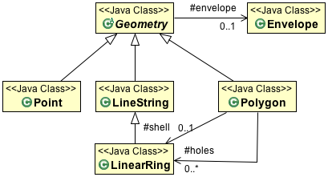

JTS-Geometry使用说明
JTS-geometry结构图

GeometryCollections

GeometryFactory

GeoTools extends
曲面扩展

创建点
//通过 coordinate创建
GeometryFactory geometryFactory = JTSFactoryFinder.getGeometryFactory();
Coordinate coord = new Coordinate(1, 1);
Point point = geometryFactory.createPoint(coord);
//通过wkt 创建
GeometryFactory geometryFactory = JTSFactoryFinder.getGeometryFactory();
WKTReader reader = new WKTReader(geometryFactory);
Point point = (Point) reader.read("POINT (1 1)");
创建线
GeometryFactory geometryFactory = JTSFactoryFinder.getGeometryFactory();
Coordinate[] coords =
new Coordinate[] {new Coordinate(0, 2), new Coordinate(2, 0), new Coordinate(8, 6) };
LineString line = geometryFactory.createLineString(coordinates);
//wkt方式
GeometryFactory geometryFactory = JTSFactoryFinder.getGeometryFactory();
WKTReader reader = new WKTReader( geometryFactory );
LineString line = (LineString) reader.read("LINESTRING(0 2, 2 0, 8 6)");
创建多边形
GeometryFactory geometryFactory = JTSFactoryFinder.getGeometryFactory();
Coordinate[] coords =
new Coordinate[] {new Coordinate(4, 0), new Coordinate(2, 2),
new Coordinate(4, 4), new Coordinate(6, 2), new Coordinate(4, 0) };
LinearRing ring = geometryFactory.createLinearRing( coords );
LinearRing holes[] = null; // use LinearRing[] to represent holes
Polygon polygon = geometryFactory.createPolygon(ring, holes );
//wkt方式
GeometryFactory geometryFactory = JTSFactoryFinder.getGeometryFactory( null );
WKTReader reader = new WKTReader( geometryFactory );
Polygon polygon = (Polygon) reader.read("POLYGON((20 10, 30 0, 40 10, 30 20, 20 10))");
Geometry relationships are represented by the following functions returning true or false:
disjoint(Geometry)- same as “not” intersectstouches(Geometry)- geometry have to just touch, crossing or overlap will not workintersects(Geometry)crosses(Geometry)within(Geometry)- geometry has to be full insidecontains(Geometry)overlaps(Geometry)- has to actually overlap the edge, being within or touching will not workcovers(Geometry)coveredBy(Geometry)relate(Geometry, String)- allows general check of relationship see dim9 pagerelate(Geometry)
To actually determine a shape based on two geometry:
intersection(Geometry)union(Geometry)difference(Geometry)symDifference(Geometry)
Some of the most helpful functions are:
distance(Geometry)buffer(double)- used to buffer the edge of a geometry to produce a polygonunion()- used on a geometry collection to produce a single geometry
The three most difficult methods are here (they will be discussed in detail):
equals(Object)- normal Java equals which checks that the two objects are the same instanceequals(Geometry)- checks if the geometry is the same shapeequalsExact(Geometry)- check if the data structure is the same
There are some book keeping methods to help discovery how the geometry was constructed:
getGeometryFactory()getPreceisionModel()toText()- the WKT representation of the GeometrygetGeoemtryType()- factory method called (i.e.point,linestring, etc..)
A couple of methods are there to store your developer information:
getSRID()- stores the “spatial reference id”, used as an external key when working with databasesgetUserData()- intended to be used by developers, a best practice is to store ajava.util.Map. GeoTools will occasionally use this field to store asrsNameor fullCoordinateReferenceSystem.